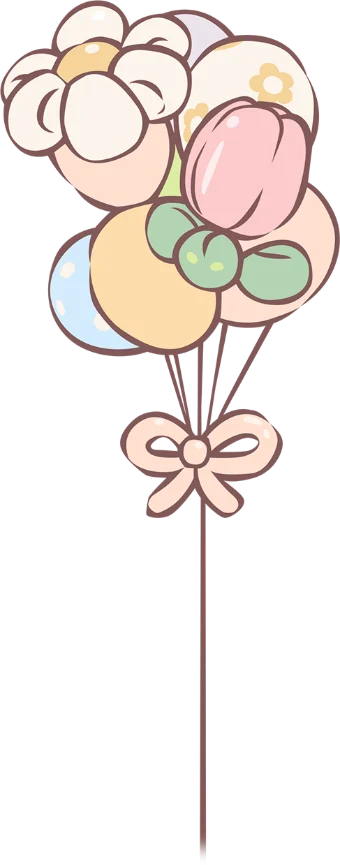
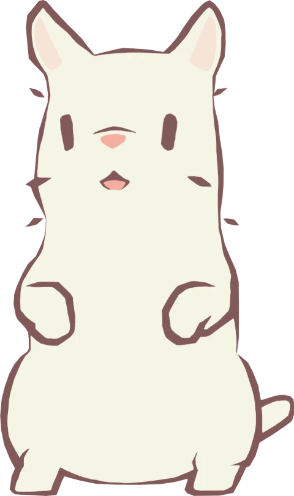
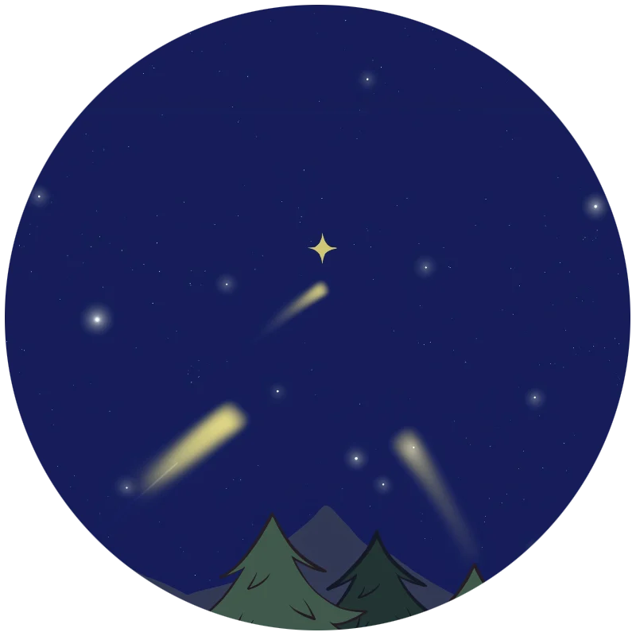
{{ t.storyEyebrow }}
{{ t.beat1 }}
{{ t.beat2 }}
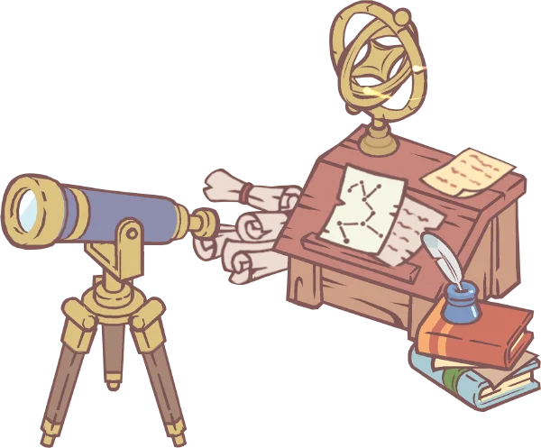
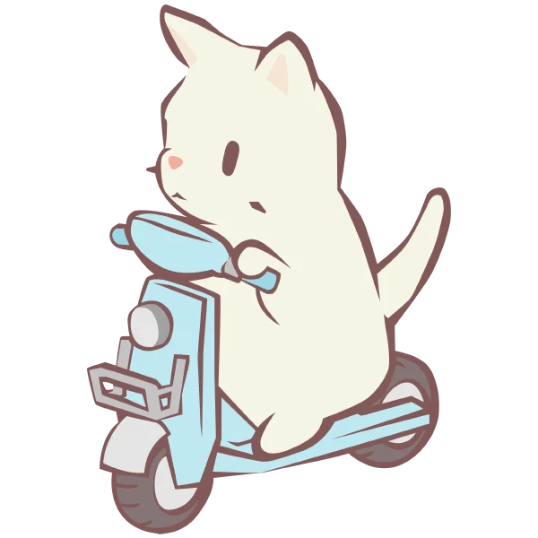
{{ t.beat3 }}
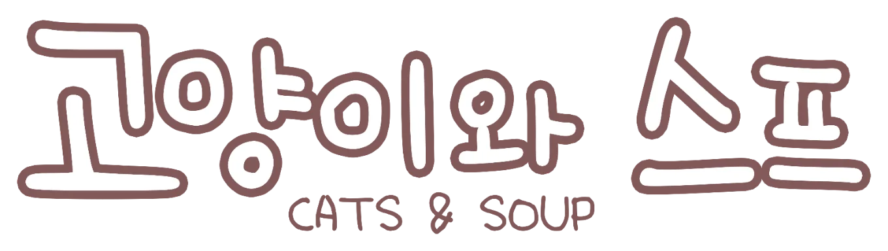
{{ t.heroTag }}
{{ t.s3Main }}
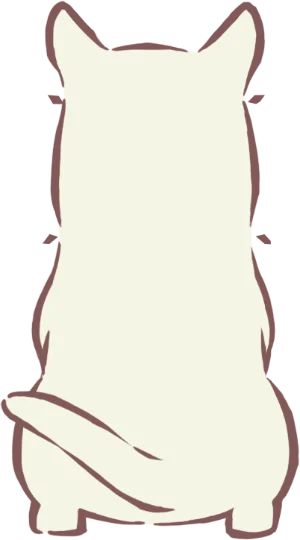
{{ t.inter1 }}
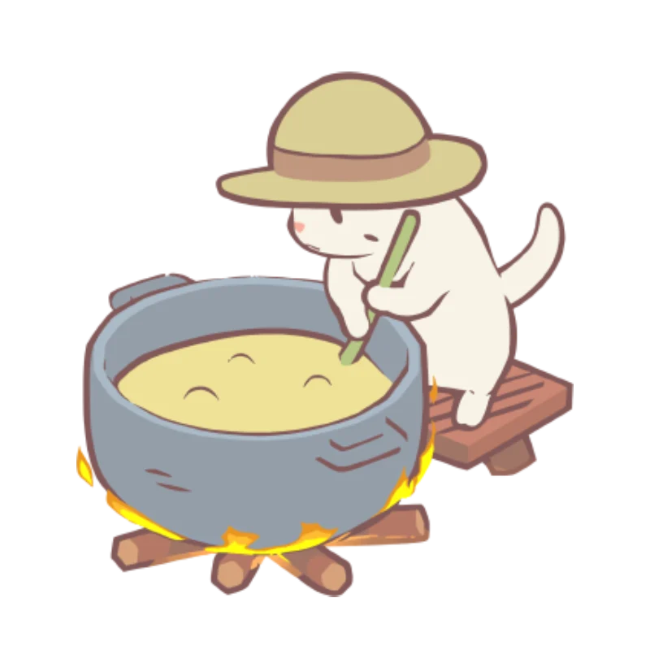
{{ t.s4Main }}
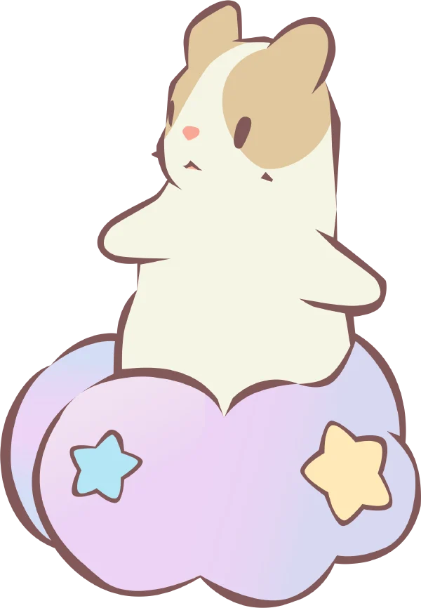
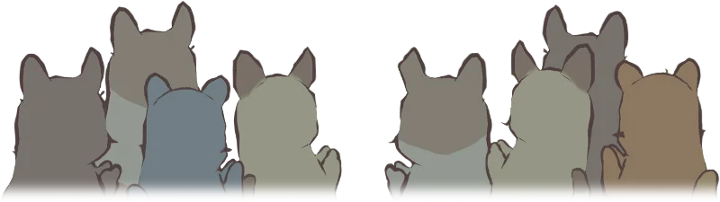
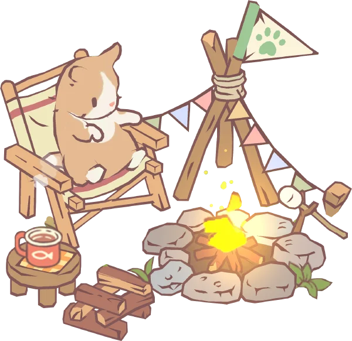
{{ t.inter2 }}
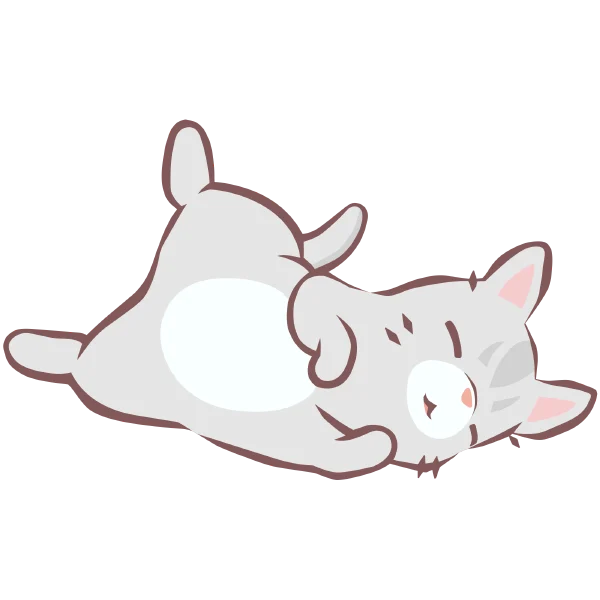
z z z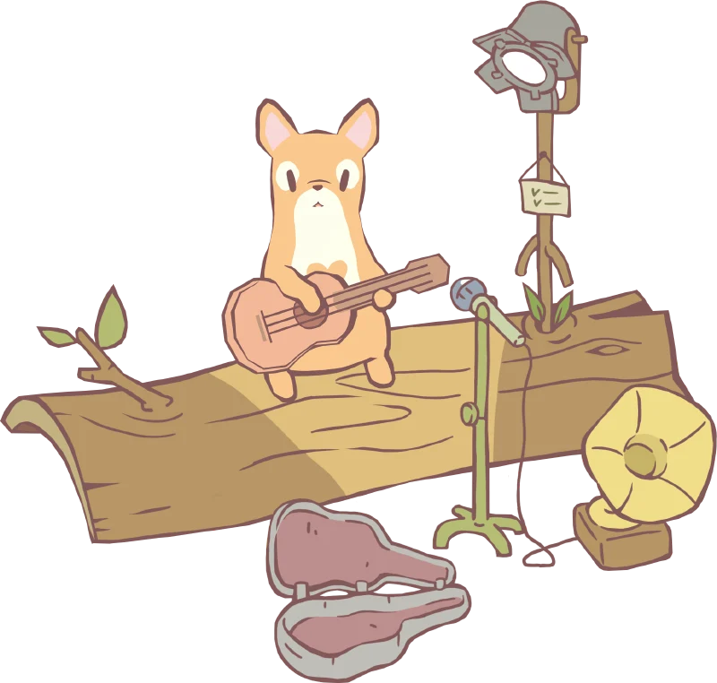
♪ ♫ ♪{{ t.guitarMain }}
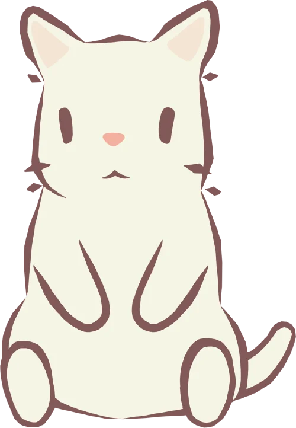
{{ t.originQuote }}
{{ t.originNote }}
{{ t.trailerMain }}
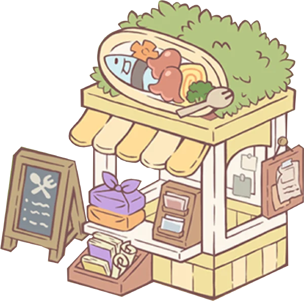
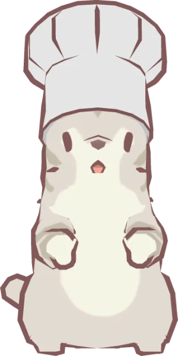
{{ t.s5Main }}